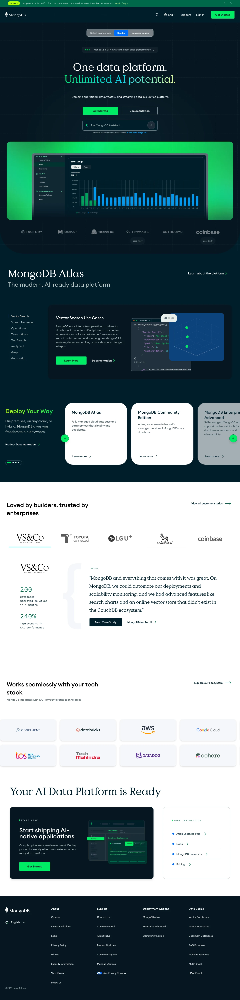

MongoDB 主题
MongoDB 的 Design.md 主题展示，围绕开发工具、媒体内容、SaaS 产品、浅色界面组织页面。
Document database. Green leaf branding, developer documentation focus.
开发工具媒体内容SaaS 产品浅色界面B2B 产品效率工具专业工具

来源
- 来源
- getdesign.md
- 镜像
- github:VoltAgent/awesome-design-md
- 网站
- https://mongodb.com/
- 详情
- https://getdesign.md/mongodb/design-md
色板
#00ed64: #00ed64#00b545: #00b545#f06bb8: #f06bb8#008c34: #008c34#001e2b: #001e2b#00684a: #00684a#00a35c: #00a35c#c3f0d2: #c3f0d2#003d4f: #003d4f#7b3ff2: #7b3ff2#fa6e39: #fa6e39#3d4f9f: #3d4f9f
字体
display: Euclid Circular Abody: Source Code Promono: ui-monospacehints: Euclid Circular A,Source Code Pro,ui-monospace,Roboto
圆角
control: 8pxcard: 12pxpreview: 16pxpill: 9999pxsource: design-md
间距
xxs: 4pxxs: 8pxsm: 12pxmd: 16pxlg: 20pxxl: 24pxxxl: 32pxxxxl: 40pxsection-sm: 48pxsection: 64pxsection-lg: 96pxhero: 120pxsource: design-md
使用建议
建议
- 建议：Use {colors.brand-green} (bright MongoDB green) for primary CTAs everywhere。
- 建议：Pair dark-teal hero bands with bright green CTA pills。
- 建议：Apply {rounded.full} to every button, every status badge。
- 建议：Apply {rounded.lg} (12px) to cards consistently。
- 建议：Use category accent colors (purple, orange, green, teal) ONLY for course tags。
避免
- 避免：use the bright green for body text or large surfaces。
- 避免：introduce additional accent colors beyond the brand green and category-encoding palette。
- 避免：soften corners on buttons; the pill is a brand signature。
- 避免：replace deep teal hero bands with white hero bands。
- 避免：apply heavy shadows on flat documentation cards; reserve elevation for code mockups。
查看 DESIGN.md